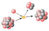

mass_number

Definition: The mass number (symbol A, from the German word Atomgewicht [atomic weight]), also called atomic mass number or nucleon number, is the total number of protons and neutrons (together known as nucleons) in an atomic nucleus. It is approximately equal to the atomic (also known as isotopic) mass of the atom expressed in atomic mass units. Since protons and neutrons are both baryons, the mass number A is identical with the baryon number B of the nucleus (and also of the whole atom or ion). The mass number is different for each isotope of a given chemical element, and the difference between the mass number and the atomic number Z gives the number of neutrons (N) in the nucleus: N = A − Z.The mass number is written either after the element name or as a superscript to the left of an element's symbol. For example, the most common isotope of carbon is carbon-12, or 12C, which has 6 protons and 6 neutrons. The full isotope symbol would also have the atomic number (Z) as a subscript to the left of the element symbol directly below the mass number: 126C.
Source: Wikipedia
Wikipedia Page (Something wrong with this association? Let us know.)
Wikidata Page (Something wrong with this association? Let us know.)
Occurs in: